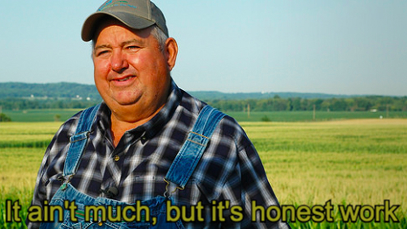

Projects
In progress:
Completed:
-
Game of Life
A small port of Conway's "Game of life" made with Dart + Flutter + Rive animations. The very first draft was immediately released, so it lacks a lot of functionality and has a lot of bugs. Source code was lost so one day I will completely rewrite and republish it.
-
Our loop is mine
Ludum Dare 47 submission. It is not an individual submission and I was only one of coders. One day our team will fix this project, since early builds still not perfect, animations are not working and some bugs persist. Sources.